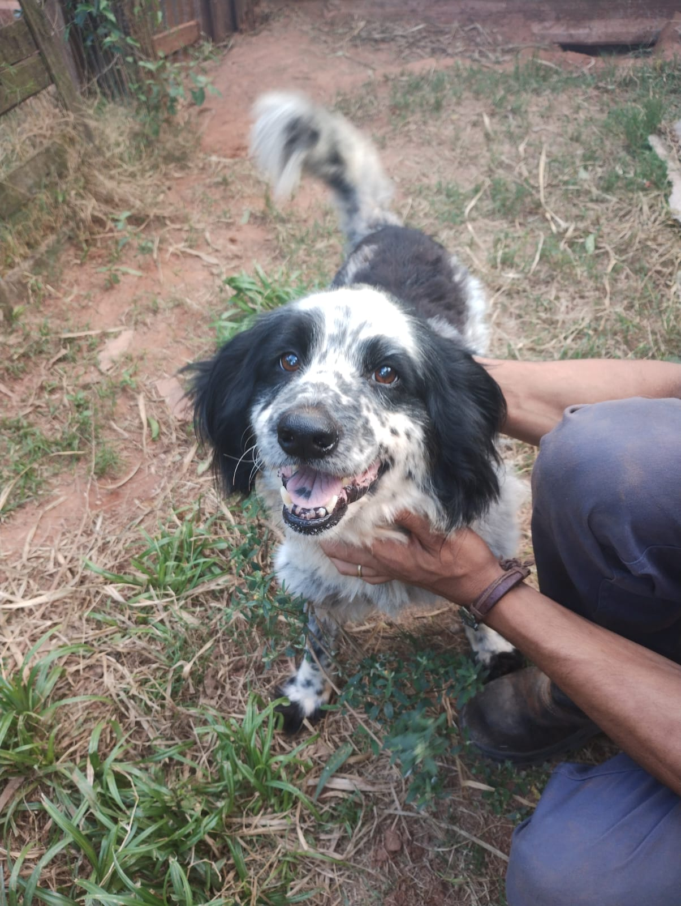
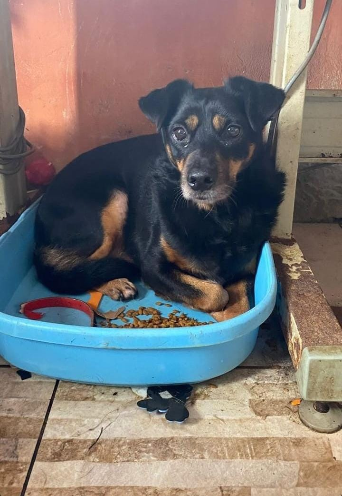

Amigos do Floppy
Ajudando animais a encontrarem lares amorosos há mais de 14 anos
Nossos Animais
Conheça nossos amiguinhos peludosRecém-Chegados

Panda

Florisbela

Maria Rosinha

Lara
Pets Perdidos
PERDIDO
Bruno
Visto por último: 2023-04-15
Cachorro mestiço marrom de porte médio com coleira vermelha. Visto por último próximo ao Parque Central.
Contato: João Silva
(555) 123-4567
(555) 123-4567

PERDIDO
Whiskers
Visto por último: 2023-04-18
Gato mestiço grisalho com pés brancos. Visto por último na comunidade da Oakwood.
Contato: Maria Souza
(555) 987-6543
(555) 987-6543
PERDIDO
Rex
Visto por último: 2023-04-20
Cachorro grande German Shepherd com coleira azul. Visto por último no Parque Riverside.
Contato: Pedro Oliveira
(555) 555-5555
(555) 555-5555

PERDIDO
Nome do Pet
Visto por último: --/--/----
Descrição do pet perdido.
Contato: Nome
(---) --- ----
(---) --- ----
Ajude os Amigos do Floppy Hoje
O abrigo mantém aproximadamente 400 cães resgatados e enfrenta custos diários de R$800 com alimentação e cuidados básicos. Sua doação faz a diferença!
PIX: CPF 949.655.600-00 (Denise Oliveira Costa)